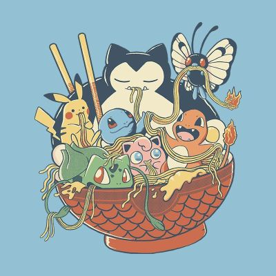
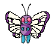
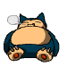
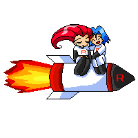

This is one of my FAVORITE recipes and definitely one you don't want to miss! With a couple of Pokéballs and some patience, you'll have a delicious meal in no time!
Gather Ingredients!
- 1 x Slightly Derpy Pikachu
- 1 x Well Rested Snorlax
- 1 x Grass Fed Bulbasaur
- 1 x Finely tuned Jigglypuff
- 1 x Scorching Hot Charmander
- 1 x Extra Butter Butterfree
- 1 x Filtered Water Squirtle
- 3 x Large Eggs
- 1 x Box of your favorite Ramen Noodles
Let's Cook!
- Grab a skillet and turn your stove to the hottest setting.
- Once the stove is extremely hot take your Scorching Hot Charmander and toss him in.
- Give him a moment to get acclimated, then carefully bounce him like you're flipping a pancake, so he's continuously doing back flips in the skillet.
- Once his little feet start to look slightly charred, crack your three eggs into the pan to cool him down slightly.
- While the eggs cook, grab a sauce pan and gently squeeze your Squirtle while aiming directly into the pan, so he can fill it with 4 cups of water. Then allow him to relax in the pan like a jacuzzi, for that extra bit of seasoning to the water.
- Bring the water to a boil and toss your Ramen Noodles in and cook to your desired consistency.
- While the noodles are cooking, grab your Bulbasaur and softly pat him over the pan with your Charmander, until its covered in leafy greens, like the canopy of a tree.
- Take your Butterfree, as well as your Snorlax and in one smooth motion slam the butterfree down on top of the leafy greens and drop the Snorlax on top of him, so he's unable to get out of the pan.
- You're going to want to

leave the Butterfree in this postion for about five minutes
while it fills the skillet with butter. You can use this time to drain some of the water from your sauce pan and ready it for the next step. - After about five minutes pour the contents of your saucepan (Squirtle, Water and Noodles) into your skillet
- Now we're at one of the most complicated steps in the recipe. When both dishese are combined, the Pokémon will get agitated and want to leave, but you can't let them!
Quickly grab your Jigglypuff
and squish it 10 times like a dog's squeaky toy, then toss it in your chaotic mix. Jiggly will then start singing the coma inducing lullaby, so
you'll want to cover your ears.
- Once all Pokémon are sleeping in the dish and your ears are still covered, loudly, but lovingly yell, "Pikachu, I choose you! Cast Lightning Bolt!" Pika will then immediately hop into the skillet and start casting "Lightning Bolt", causing the water to be repeatedly zapped with electricity.
- You want to be very careful with how long you allow Pikachu to do this. I suggest about 15 shocks, or until you see the water start to boil
- After those 15 shocks, you can stop covering your ears, because all Pokémon should be sufficiently incapacitated, except TWO:Pikachu & Snorlax. Pikachu will be on a shocking rampage at this point, so the only way you can stop him is by using your

WELL RESTED Snorlax.
If you've done everything right, Snorlax will now start to feel uncomfortable and want to shift his position. Due to his thick exterior, 15 shocks isn't enough to cause any damage, so he'll finish off the recipe. Simply tell Snorlax, "It's time to wake up!" and he will then roll over in annoyance and unintentionally roll off of Butterfree and across all other Pokémon in the bowl. This will stop Pika from shocking, as well as waking up all other Pokémon, leaving them with a slight dazed effect. - We're almost done! Toss on any garnishes you might want and your favorite hot sauce.
- Lastly, pour the entire mixture into a bowl and grab some chopsticks. Before you enjoy the fruits of your labor, you must tell all of your Poképals, "it's time to close your eyes and to never forget that you love them, but you wanna be the very best like no one ever was.
Hungry & Lazy?

Stop by Team Rocket's Hideout in Mahogany Town, where it's served up fresh, daily!
Recipe courtesy of Team Rocket.
Illustration by Pepe Rodriguez.